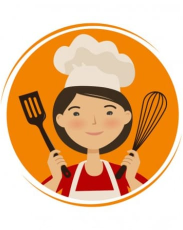

Left
Materi Masak
Middle
Memasak adalah Suatu kegiatan yang dapat menghasilkan sebuah makanan/cara merubah bahan makanan mentah menjadi matang, dan kegiatan yang dapat memberi rasa pada suatu bahan makanan.Tujuannya adalah agar rasa makanan tersebut ada, agar kita tahu cara mengelolahnya, agar membuat masakan lebih menarik, dan menambah cita rasa.

Memasak juga mempunyai manfaat antara lain: Memasak membuat lebih mandiri,Memasak membuat rasa makanan pun menjadi selera,Memasak sendiri tentu terjamin kandungannya dan kebersihannya,Memasak sebenarnya adalah me-time yang menyenangkan.
Right
Memasak adalah gaya memasak yang dicirikan oleh bahan,teknik,dan hidangan khas, dan biasanya dikaitkan dengan budaya atau wilayah geografis tertentu.Memasak dan penyajian makanan dalam prancis yang dipopulerkan pada tahun 1960-an.
Artikel Memasak Lain